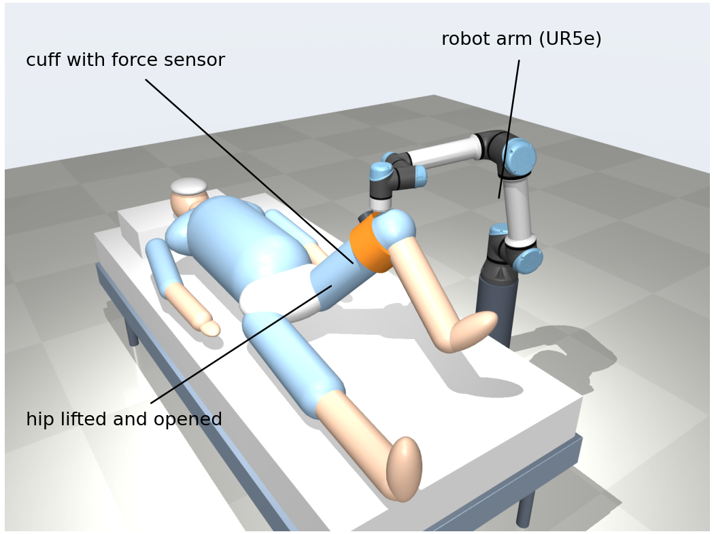
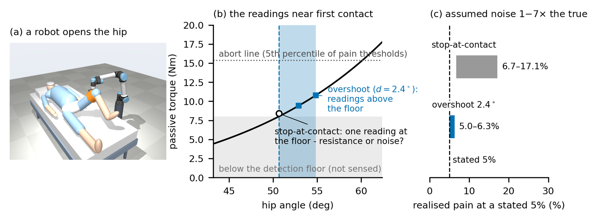
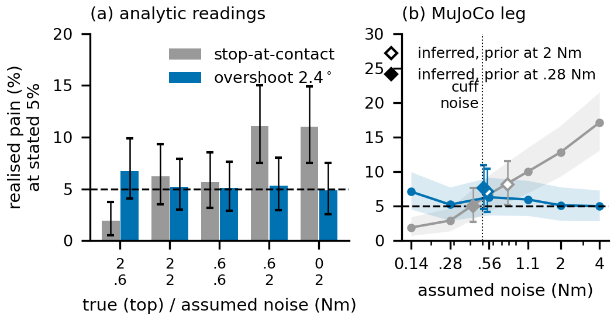

Physical human–robot interaction · simulation (MuJoCo) · Submitted to IEEE Robotics and Automation Letters (manuscript 26-6751), October 2026
A care robot that stops a limb at the first sensed resistance seems safe, but its one reading sits at the force sensor's detection floor, so the pain risk it states depends on a noise level it assumes and cannot check. Pushing 2.4° past first contact on purpose adds readings above the floor. On a MuJoCo leg, as the assumed noise ranges from the true noise to seven times it, realised pain at a stated 5 % stays at 5.0–6.3 % with the overshoot and rises from 6.7 to 17.1 % when the robot stops at contact. All of it is simulation, and the overshoot hurts more simulated persons while probing.
Mu-Hua Wang · National Yang Ming Chiao Tung University · sole author
One illustrative probe of a median simulated person: stop at first contact (left) and a 2.4° overshoot (right), with the force readings below each. The torque curve and noise are the illustrative values used on this page (true noise 0.56 Nm, floor 8 Nm); not study data and not a statistic. Arm model from MuJoCo Menagerie.
A robot that changes an older adult's diaper has to lift and open the hip. Too little and the task fails; too far and it hurts, and how far is too far differs from person to person. So the robot probes first: it moves the leg slowly and feels for passive resistance, then stops each later motion at the angle where it predicts a 5 % risk of pain.
The usual rule is to stop at the first sensed contact, as collision detection does. A force sensor reports nothing below its detection floor (8 Nm here), so that rule leaves the robot one reading at the floor. Whether that reading is real resistance or noise depends on how noisy the robot believes its readings are at contact, and that noise is not the sensor's factory specification: cuff slip, friction and the person's own movement add to it, and a care setting cannot measure it for each person.

The simulated task: a robot arm opens a supine older adult's hip through a cuff with a force sensor. MuJoCo rendering for visualisation; arm model from MuJoCo Menagerie.
The idea. An astronomer who sees a faint star at the detection limit has to correct for it with a noise model. A robot can choose where it measures. Pushing 2.4° past first contact takes two more readings above the floor, which measure both the limb and the noise. The probe ends at a median of 11.3 Nm, below the simulated pain threshold of 99 % of the older adults.
The black curve is the true passive torque; readings carry the cuff's true noise (0.56 Nm), and anything under the 8 Nm floor is reported as zero (grey ticks). The slider sets the noise the robot assumes. The bar on each reading is ±2 assumed standard deviations; the grey band marks the hip angles where the true curve passes through the contact reading's bar.
An illustration of the mechanism with illustrative values, not the study's estimator. The study infers the person with a censored likelihood over all readings, including the zeros.
The same 200 simulated older adults, probed once on a MuJoCo leg, then evaluated with six assumed noise levels. Each robot states a 5 % risk of pain; the chart shows how often it actually hurt. Bands are 95 % bootstrap intervals over persons.
Realised pain at a stated 5 %, assumed noise from the true value to 7×.
Same 200 persons, same range of assumed noise.
Default noise model, three simulated populations: 12–22 % falls to 5–9 %.
With less assumed noise than there is, stop-at-contact is conservative (1.90 % at 0.14 Nm), but then it opens the hip less than the person tolerates. With a matched noise model the difference was not detected (6.72 against 6.30 %, p = 0.7). The gap opens when the robot assumes more noise than the cuff has.

Paper Fig. 1. (b) Stopping at contact leaves one reading at the floor (circle); the overshoot adds two above it (squares). (c) Realised pain at a stated 5 % as the assumed noise ranges from the true noise to 7×.
Each fix below keeps stop-at-contact and tries to repair it. Realised pain (%) at a stated 5 %, MuJoCo leg, older-adult world; each experiment uses its own 200 new simulated persons, so the overshoot's own value differs a little between rows.
| Fix | Stop at contact | Overshoot | Why it falls short |
|---|---|---|---|
| Infer the noise jointly with the limb (prior centre 0.14–4 Nm, two person sets) | 6.1–13.9 | 9.1–9.9 | The noise inferred at contact follows its prior (0.28 to 0.86 Nm); the overshoot's lands at 0.50–0.55 Nm, near the true 0.56 |
| Dwell at contact for 2 or 5 readings | 18.6 / 17.9 | 9.1 | Extra readings come from the same position |
| Lower the floor to 4 or 2 Nm | 13.7 / 15.3 | 4.2 / 4.0 | The stopping reading sits at the new floor |
| Keep the raw signal below the floor, with literature-sized low-torque disturbances | 4.7–46.8 | 3.5–9.2 | Needs a correct model of the low-torque region |
The raw signal worked in the clean simulator (10.4 against 9.1 %, difference not detected, p = 0.2). It became unreliable once the low-torque region carried disturbances at sizes reported in the literature: the passive hip moment at rest, skin–sheet friction, muscle tone and paratonia. The overshoot uses only readings above the floor.

Paper Fig. 3. (a) Analytic readings, five combinations of true and assumed noise. (b) MuJoCo leg, the same 200 persons evaluated with six assumed noise levels; diamonds mark noise inferred jointly with the limb, placed at the median inferred noise.
Against 0.5–3.5 % for stop-at-contact, higher in every comparison.
Probing and use together, because persons hurt during use fall by 33–54 %.
No simulated person was hurt while probing, with either rule.
The simulated care scene from all sides. Visualisation only; not study data and not a statistic.
Scope: simulation only, 200 simulated persons per experiment; the overshoot hurts more persons while probing (2.5–7 % against 0.5–3.5 %) but fewer overall, and the between-person spread of pain thresholds must come from human studies.
The next step is a bench leg with a real cuff and force sensor, to measure the reading error at contact without pain.